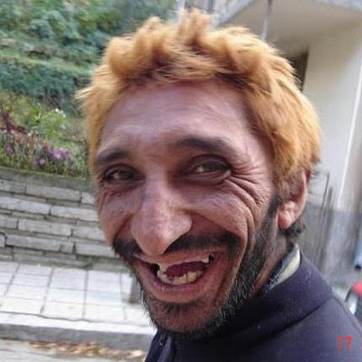

Hona hemen web orrialde honen sortzaileen informazioa:
| Izen-abizenak | Argazkia | Espezialitatea | Jaioterria | Helbide elektronikoa |
|---|---|---|---|---|
| Jon Guilló Rodriguez | Software | Elgoibar | jguillo001@ikasle.ehu.eus | |
| Ander Madinabeitia Araquistain |  | Software | Legorreta | amadinabeitia001@ikasle.ehu.eus |